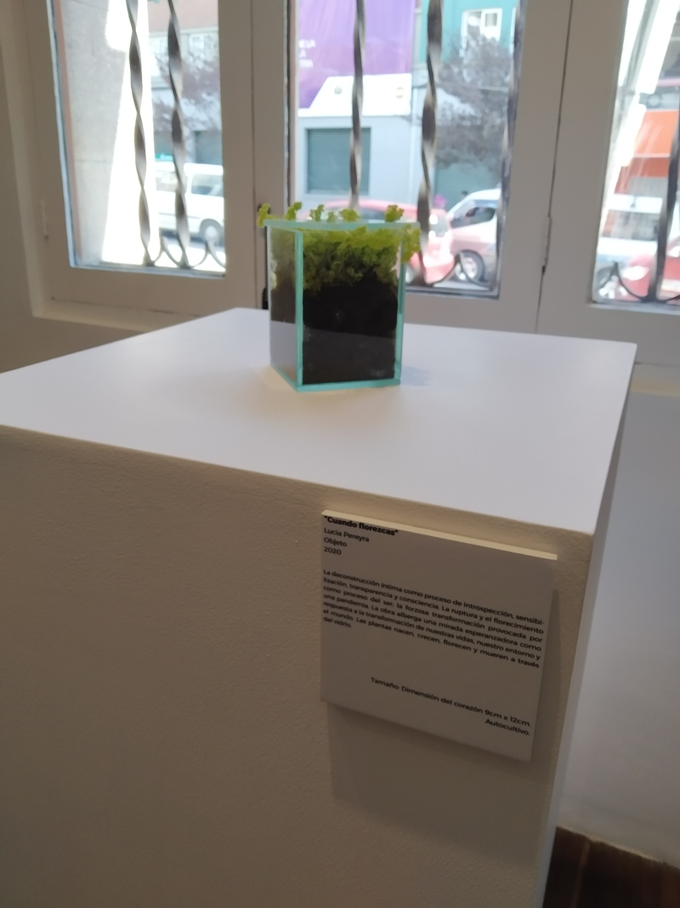

Cuándo florezcas
Autora: Lucia Pereyra
Medio: Objeto
Año: 2020
La deconstrucción íntima como proceso de introspección, sensibilización, transparencia y consciencia. La ruptura y el florecimiento como proceso del ser; la forzosa transformación provocada por una pandemia. La obra alberga una mirada esperanzadora como respuesta a la transformación de nuestras vidas, nuestro entorno y el mundo. Las plantas nacen, crecen, florecen y mueren a través del vidrio.